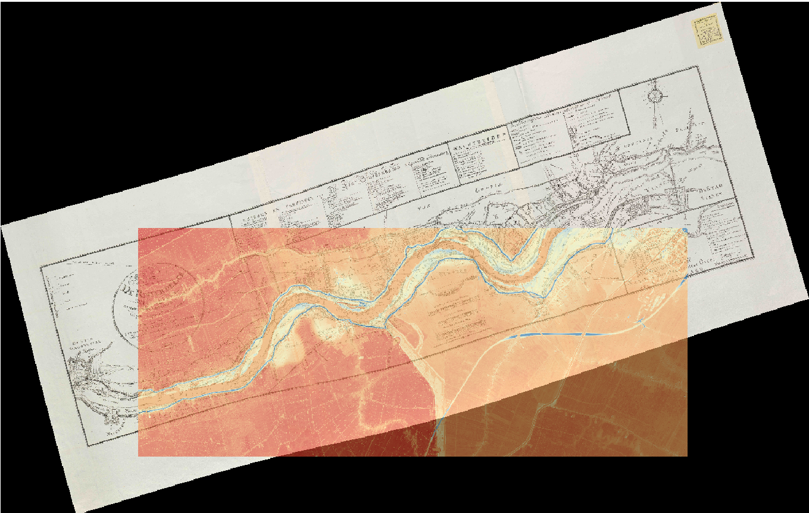
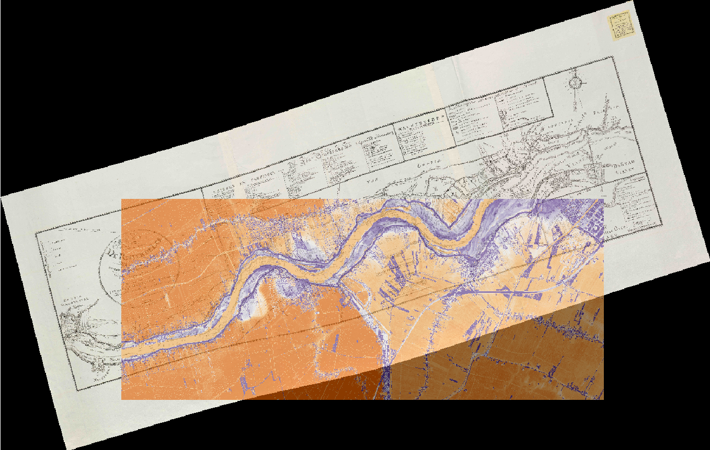

Digital Elevation Models
Digital surface models (DSM) show building and tree cover while digital terrain models (DTM) only show the terrain. For this assignment, it was important to keep in mind that the Netherlands sits below sea level, so everything was analyzed with reference to the Amsterdam Ordnance Datum (NAP). The rivier de lek was georeferenced with a map from 1823 by G.F. Baron van Derfelden van Hinderstein, and was analyzed using QGIS.
Digital Terrain Model georeferenced on the old map.
Digital Surface Model georeferenced on the old map.

This final map is based on the DTM map, but has a DSM shadow layer to add more visual interest. Color choices were important in this assignment, with the DSM map having a purple/orange color scheme and the DTM map having a red/blue color scheme. This helps in showing the elevation differences as there in generally very little change in elevation across the Netherlands. Orignally, there were issues with the georeferencing step due to distortions in the old map. This was fixed by changing the transformation type from linear to thin plate spline.